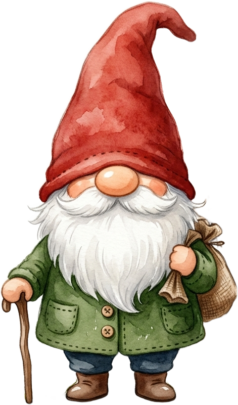
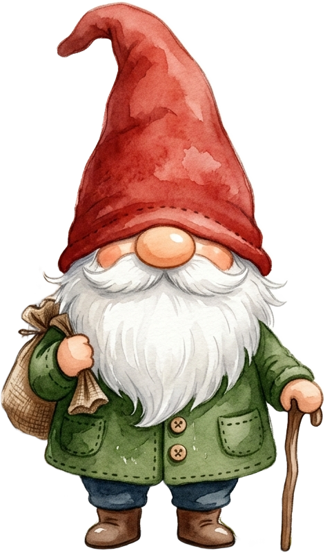

Druckvorlage · 3 bis 8 Jahre · Dezember
Freundlichkeits-
Wichtel
Ein kleiner Wichtel zieht hinter der Wichteltür ein und bringt jeden Morgen eine freundliche Aufgabe. Kein Chaos, kein Mehl auf dem Boden, fünf Minuten am Tag.
20 Seiten · A4 + US Letter
Für Eltern
So funktioniert der Freundlichkeits-Wichtel
Kinder lieben kleine Rituale. Jeden Morgen findet Ihr Kind an der Wichteltür einen Zettel mit einer kleinen, freundlichen Aufgabe. Gemeinsam lesen, gemeinsam machen und einen Kreis im Tracker ausmalen.
1
Der Wichtel zieht einEine kleine Tür an der Fußleiste, ein Kuscheltier oder einfach ein Briefumschlag am Fenster reicht. Füllt zusammen den Wichtel-Ausweis aus.
2
Drucken und schneidenDie Zettel auf Papier oder Karton drucken und ausschneiden (4 pro Seite). In einem Umschlag bereitlegen.
3
Ein Zettel pro TagAbends einen Zettel an die Wichteltür legen, morgens gemeinsam lesen. Die meisten Aufgaben dauern fünf Minuten und kosten nichts.
4
FeiernEinen Kreis im Tracker ausmalen. An Heiligabend den Abschiedsbrief lesen und die Urkunde überreichen.
Zettel vergessen?
Dafür gibt es die Rettungsbriefe: „Ich habe verschlafen“ und „Schneesturm!“.
Ganz nach Ihrer Familie
Aufgaben, die nicht passen, einfach weglassen. Dafür gibt es leere Zettel und 30 weitere Ideen.
Hallo, ich bin da!
Hallo, mein Freund! Ich bin ein kleiner Wichtel und wohne ab heute hinter deiner Wichteltür.
Jeden Morgen lasse ich dir eine freundliche Aufgabe da. Freundlichkeit ist mein Wichtelzauber: Mit jeder guten Tat leuchtet meine Mütze ein bisschen heller.
Ich freue mich schon auf all die lieben Dinge, die du tust!
Dein Freundlichkeits-Wichtel
Jeden Tag einen Kreis ausmalen
Mein Freundlichkeits-Tracker
Nach jeder freundlichen Aufgabe malst du einen Kreis aus. Schau, wie deine Freundlichkeit bis Weihnachten wächst!
1
2
3
4
5
6
7
8
9
10
11
12
13
14
15
16
17
18
19
20
21
22
23
24
Ich habe verschlafen!
Guten Morgen! Ich war gestern so lange in der Wichtelwerkstatt, dass ich verschlafen habe.
Deine Aufgabe heute: Schenke jemandem ein großes Lächeln. Morgen bin ich wieder pünktlich!
Dein Freundlichkeits-Wichtel
Schneesturm!
Ein großer Schneesturm hat mich gestern Nacht aufgehalten.
Deine Aufgabe heute: Hilf jemandem, der einen schweren Tag hat. Morgen bin ich wieder da!
Dein Freundlichkeits-Wichtel
Du machst das toll!
Der Weihnachtsmann hat von all deinen guten Taten gehört. Er hat sich so gefreut, dass er ein Tänzchen gemacht hat!
Mach weiter so, kleiner Freund. Weihnachten kommt näher und deine Freundlichkeit leuchtet hell.
Dein Freundlichkeits-Wichtel
Ausschneiden, ein Zettel pro Tag
Schilder für die Wichteltür
Ausschneiden und an die Wichteltür kleben. Ein Schild für die Ankunft, eins für Ruhe, eins für die Post und eins für den Abschied.
WICHTELTÜR
Willkommen, kleiner Wichtel!
ausschneiden und aufkleben
WICHTELTÜR
Psst! Wichtel schläft
ausschneiden und aufkleben
WICHTELTÜR
Wichtelpost
ausschneiden und aufkleben
WICHTELTÜR
Danke und bis nächstes Jahr!
ausschneiden und aufkleben
Tipp: Auf Karton drucken. Kein Glitzer, kein Mehl: Der Wichtel mag es ordentlich.

Auf Wiedersehen!
Heute Nacht fliege ich mit dem Weihnachtsmann zurück in den Wichtelwald.
Danke für jede Umarmung, jedes Lächeln und jede liebe Tat. Bleib das ganze Jahr so freundlich.
Bis nächstes Jahr!
Für immer dein Freundlichkeits-Wichtel
Offizielle Wichtel-Urkunde
Ich war freundlich!
Diese Urkunde bekommt
für 24 Tage Freundlichkeit. Alle Wichtel sind stolz auf dich!
Datum ____________ Unterschrift: Dein Wichtel
Für Eltern
30 weitere kleine Ideen
Wenn ein Zettel nicht in den Tag passt, nehmen Sie eine dieser Ideen. Kurz, konkret und gemeinsam gemacht.
- Jemandem die Tür aufhalten
- Mit einem Erwachsenen ein Stück Müll aufheben
- Dem Geschwister den Vortritt lassen
- Bei jedem Essen „bitte“ sagen
- Einem Erwachsenen ein Glas Wasser bringen
- Beim Füttern des Haustiers helfen
- Das Bücherregal aufräumen
- Ein Gute-Besserung-Bild malen
- Einen Sticker aufs Kopfkissen legen
- Oma anrufen und ein Lied singen
- Ein Kompliment machen: „Schöne Mütze!“
- Beim Handtücher-Falten helfen
- Ein Spielzeug für jemanden zurücklegen
- Ein Bild für den Busfahrer malen
- Einen traurigen Freund trösten
- Den Wäschekorb mittragen
- Plastikbecher spülen
- Den Snack teilen
- Beim Frühstück helfen
- Die Pflanzen gießen
- Stifte aufräumen, ohne gefragt zu werden
- „Entschuldigung“ sagen und umarmen
- Einem Nachbarn am Fenster winken
- Ein Armband für einen Freund basteln
- Socken sortieren
- Jemand anderen das Lied aussuchen lassen
- Den Hund oder den Teddy bürsten
- Vogelfutter nachfüllen
- Hausschuhe für jemanden anwärmen
- Allen eine Gute-Nacht-Umarmung geben
Passt dazu
Unsere Kits gibt es auch auf Englisch (Kindness Elf, Kindness Reindeer) – praktisch für zweisprachige Familien. Alle im Shop AureliaVenn.